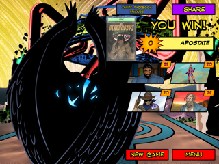

19 posts · 754 views · started 2016-06-28 08:43 UTC
JO
jorgenp
2016-06-28 08:43 UTC
#1
Apostate vs. Eternal Haka, Sky-Scraper, Chrono Ranger and The Scholar in The Enclave of the Endlings.
This is your typical Apostate fight, so it should be an easy enough mint. The deck isn't set up against the heroes too badly, although there is a surprise or two to discover, and some funny environment combos too.
I must admit, going into this, I was dreading the deck to be set up to have Profane Summons pull out Corrupted Effigy, Orb of Delirium and Tome of the Unknowable... I've had that combo happen in my own games and it is just so incredibly evil! Fortunately, my fears didn't come to pass.
P2
Powerhound_2000
2016-06-28 11:22 UTC
#2
This is a game that seems like it could get out of hand but typically you have the answer. For the most part I never really did much to the environment unless I used something that hit all targets.
ME
Melkhor
2016-06-28 12:04 UTC
#3
Skyscraper just LOVES the Enclave. So many wonderful targets that only needs a little, link-induced motivation to become your best friends ever!
RP
Reverend_Pete
2016-06-28 14:18 UTC
#4
Mint.
I was amused by Haka's initial draws. Sky-Scraper played LOTS of links, Chrono Ranger played LOTS of bounties and cards, Haka kept the board clear with a couple of well-timed Rampages.
Suprisingly, I found that Scholar didn't contribute much for me in this one. He did take out the Runes with a Grace Under Fire, but I had a couple of turns where Scholar's best move (it seemed to me) was to double skip and draw 2.
TA
TakeWalker
2016-06-29 00:33 UTC
#5
Haka was MVP for me. It was tons of fun dropping his hand into a Haka of Battle to one-shot the Orb right before Apostate went down.
KR
Kratos13
2016-06-29 01:16 UTC
#6
Mint! Ended with everyone below 10 HP but didn't feel like I was in any real jeopardy. A fortuitously timed Neutralizing Resonator avoided a Profane Summons which helped. Stupidly playing Vitality Surge with Tome of Unknowable in play and bringing out the Runes did not help. I prioritized Masadah and made sure I kept a Rampage handy for the Orb which eventually came out. Would've made my life easier if I used Flesh to Iron instead of my normal go-to Mortal Form to Energy which didn't end up doing much.
AL
Arcanist_Lupus
2016-06-29 03:16 UTC
#7
Mint. No real danger, no real MVP. Chrono never got more than one Ultimate Target, but drew far too many Hunter and Hunteds. Apostate never chained out a bunch of relics at once, and the team had enough ongoing destruction to deal with the one Apocalypse I saw many times over.
EM
emcg575797
2016-06-29 07:03 UTC
#8
Mint.
Definition of a straight forward game. An early Emergency Evac took care of Apocalypse, and Haka one shot the Tome and that was really all that Apostate did. Getting my grubby little hands on By Any Means in turn one was really sweet, and Proverbs and Axiom was used to end the game as everyone could happily deal damage.
All the Heroes were in the high teens, could have been higher, but there was a significant amount of self damage. Didn't get to play Haka of Battle though
TS
The_Burning_Stickman
2016-06-29 14:21 UTC
#9
Do you mean more than one Bounty? Because there is only one Ultimate Target.
AL
Arcanist_Lupus
2016-06-29 14:40 UTC
#10
I only drew one bounty, which was Ultimate Target. So yes, that's what I meant.
CL
ClericalError
2016-06-30 10:08 UTC
#11
I am 1 second away from Mint as I write this. However I will not get it. I have a very strange bug in my game :(
The glitch is that Zsreem is about to kill Apostate, when he tries to it tries to kill "Condemnation". I get to the screen where is says, which should trigger first, the "No Executions" Bounty or "Kill on Sight" bounty and the game just hangs there doing nothing.
MI
MigrantP
2016-06-30 13:16 UTC
#12
Please send a bug report to us via the in-game Credit screen or http://handelabra.com/contact
TS
The_Burning_Stickman
2016-06-30 14:24 UTC
#13
Aye, this was an easy Mint. No real surprises, and even the Profane Summons didn't really do any great harm. A couple plays of Just Doing My Job got Chrono a bunch of bounties and he Masada'd his way to victory.
My one minor misstep was using Offensive Transmutation on Apostate right before Immutus came out, which made it kind of a waste. But other than that, smooth sailing.
PH
phantaskippy
2016-06-30 19:41 UTC
#14
Scraper discarded the first profane summon, Haka ate everything, and Flesh to Iron + Toxic Dart eliminated most of the damage.
Easy peasy.
TA
TakeWalker
2016-06-30 22:40 UTC
#15
I did this exact same thing, I was so mad! XD
MR
MrFettuccine
2016-07-01 18:00 UTC
#16
I'm not sure if it has always been like this in the video game but when doing this One-Shot, I realized that Apostate's character card has different wording than the physical card game. In the physical game, it says when he is reduced to zero, he flips and destroys a relic. In the video game, it says when he would be destroyed. That really messed me up because I was really confused when I had the destroyed (not reduce to zero) Apostate with the help of Chrono Ranger's bounty and how he was still alived. Did they fix this wording in the reprint of the oversized cards or something? I didn't realize it was ever meant to be destroyed and not reduced to zero.
P2
Powerhound_2000
2016-07-01 18:09 UTC
#17
It's an errata piece that is listed in the Fireside chats post from MigrantP
RO
robb8888
2016-07-02 05:28 UTC
#18
Mint. Maybe it was just dumb luck with the cards I played, but I killed Apostate before he even played Profane Summons. (Round 4/5? It was right after he got out Ruins of Malediction.). No heroes below 20 HP, and Scholar at max HP. CR/Scraper were co-MVPs. Jim got his hat out first thing, and thanks to Eye on the Prizes and Just Doin My Job, played a ton of bounties and then Hunter-Hunted -- he was at +6 damage, and put 90% of the hurt on Apostate. Scraper Linked the heck out of stuff, and took care of the early Apocalypse. I had Haka ready to take out relics with Savage Mana, but he never got the chance; Jim just kept plugging Apostate with his base power/Ultimate Target, and he went down quickly.

DO
Donner
2016-07-02 20:01 UTC
#19
My game was very similar! Mint, everyone in their 20's.